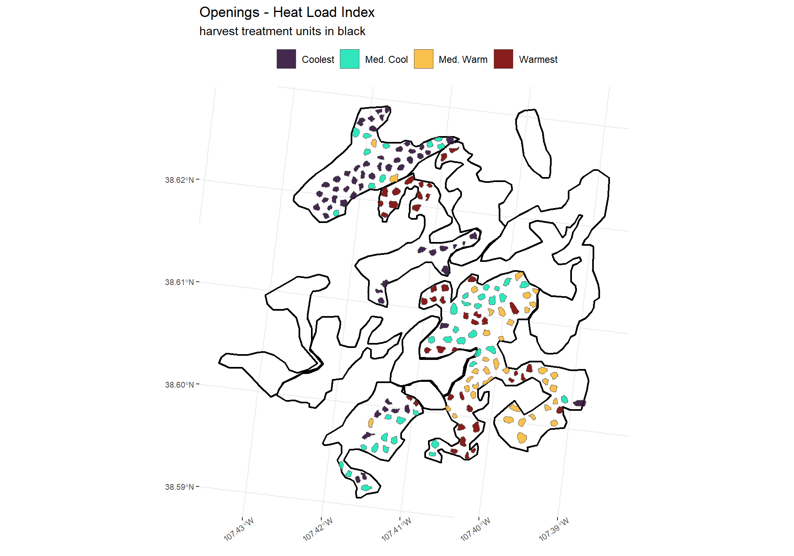
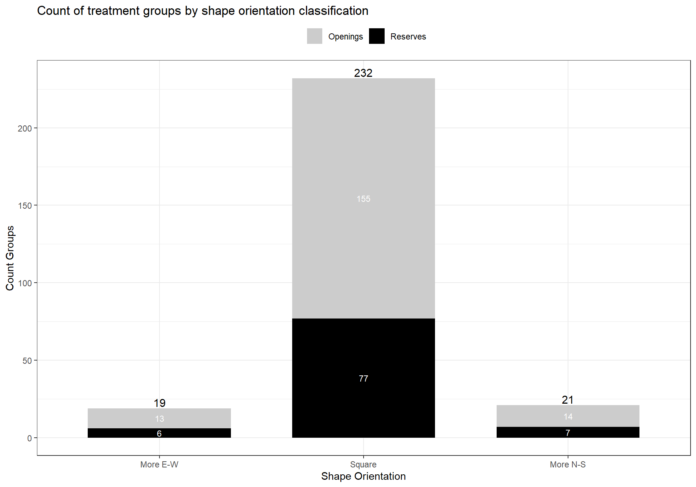

Chapter 3 Analysis of HLI
# turn off the s2 processing
## https://stackoverflow.com/questions/68478179/how-to-resolve-spherical-geometry-failures-when-joining-spatial-data
sf::sf_use_s2(FALSE)3.1 Load Data
Spatial data was loaded and cleaned in prior chapter.
# read
topo <- readRDS("../data/topo.RDS")
all_groups_topo <- sf::st_read("../data/all_groups_topo.gpkg")
units <- sf::st_read("../data/units.gpkg")3.2 Set up base map
# map
vars <- c(
"elev"
, "slope_deg"
, "aspect_deg"
, "folded_aspect_deg"
, "hli"
)
vars_title <- c(
"Elevation (m)"
, "Slope (\u00B0)"
, "Aspect (\u00B0)"
, "Folded Aspect (\u00B0)"
, "Heat Load Index (HLI)"
)
vars_color <- c(
"viridis"
, "cividis"
, "inferno"
, "plasma"
, "turbo"
)
vars_llim <- c(
min(topo$elev, na.rm=T)*.95
, 0
, 0
, 0
, 0
)
vars_ulim <- c(
max(topo$elev, na.rm=T)*1.05
, max(as.numeric(topo$slope_deg), na.rm=T)*1.05
, 360
, 180
, 1
)
# plts <- list()
plt_fn <- function(x){
(
ggplot() +
stars::geom_stars(data = (topo %>% dplyr::select(vars[x]))[]) +
scale_fill_viridis_c(option = vars_color[x], alpha = 0.9, na.value = "transparent"
, limits = c(vars_llim[x], vars_ulim[x])
) +
geom_sf(data = units, alpha = 0, lwd = 1, color = "black") +
labs(
title = vars_title[x]
, fill = vars_title[x]
) +
xlab("") +
ylab("") +
scale_x_continuous(expand = c(0, 0)) +
scale_y_continuous(expand = c(0, 0)) +
theme_bw() +
theme(
legend.position = "bottom"
, legend.direction = "horizontal"
, legend.margin = margin(0,0,0,0)
, legend.text = element_text(size = 7)
, legend.title = element_text(size = 7)
, axis.text.y = element_text(size = 7)
, axis.text.x = element_text(size = 7, angle = 35, hjust = 0.7)
, panel.border = element_blank()
)
)
}3.3 Spatial groups and HLI
See this section for discussion on HLI. HLI is a proxy for aspect-driven solar heating.
Higher values (i.e. closer to 1) represent warmer conditions while lower values (i.e. closer to 0) represent cooler conditions.
# load basemap
hli_basemap <- plt_fn(which(vars=="hli"))
# openings
hli_basemap +
geom_sf(
data = all_groups_topo %>% dplyr::filter(group == "Openings")
, fill = "white"
, color = "firebrick"
, lwd = 0.5
) +
geom_sf(
data = all_groups_topo %>% dplyr::filter(group == "Reserves")
, fill = "black"
, color = "black"
) +
labs(
subtitle = "Reserves = black, Openings = white"
)3.4 Summary of groups and HLI
#summary
all_groups_topo %>% sf::st_set_geometry(NULL) %>%
dplyr::group_by(group) %>%
dplyr::summarise(
N = n()
, mean_hli = mean(hli, na.rm = T)
, min_hli = min(hli, na.rm = T)
, max_hli = max(hli, na.rm = T)
, hli_25 = quantile(hli, 0.25)
, hli_75 = quantile(hli, 0.75)
) %>%
kableExtra::kable(
caption = "Summary statistics by group type"
, col.names = c(
"Group Type"
, "# Groups"
, "Mean HLI"
, "Min. HLI"
, "Max. HLI"
, "25% HLI"
, "75% HLI"
)
, digits = 2
) %>%
kableExtra::kable_styling(font_size = 12) %>%
kableExtra::column_spec(1, bold = TRUE, width = "18em")| Group Type | # Groups | Mean HLI | Min. HLI | Max. HLI | 25% HLI | 75% HLI |
|---|---|---|---|---|---|---|
| Openings | 182 | 0.80 | 0.56 | 0.97 | 0.72 | 0.87 |
| Reserves | 90 | 0.83 | 0.64 | 0.98 | 0.81 | 0.87 |
3.5 Quartiles of HLI
all_groups_topo_fnl <- all_groups_topo %>%
dplyr::group_by(group) %>%
dplyr::mutate(
hli_group_percent_rank = dplyr::percent_rank(hli)
, hli_group_qrtl = dplyr::case_when(
hli_group_percent_rank <= .25 ~ "Coolest"
, hli_group_percent_rank <= .5 ~ "Med. Cool"
, hli_group_percent_rank <= .75 ~ "Med. Warm"
, hli_group_percent_rank <= 1 ~ "Warmest"
, TRUE ~ "ERROR"
)
) %>%
dplyr::mutate(
hli_group_qrtl = factor(
hli_group_qrtl
, ordered = TRUE
, levels = c("Coolest", "Med. Cool", "Med. Warm", "Warmest")
)
) %>%
dplyr::ungroup() %>%
dplyr::mutate(
hli_overall_percent_rank = dplyr::percent_rank(hli)
, hli_overall_qrtl = dplyr::case_when(
hli_overall_percent_rank <= .25 ~ "Coolest"
, hli_overall_percent_rank <= .5 ~ "Med. Cool"
, hli_overall_percent_rank <= .75 ~ "Med. Warm"
, hli_overall_percent_rank <= 1 ~ "Warmest"
, TRUE ~ "ERROR"
)
) %>%
dplyr::mutate(
hli_overall_qrtl = factor(
hli_overall_qrtl
, ordered = TRUE
, levels = c("Coolest", "Med. Cool", "Med. Warm", "Warmest")
)
) %>%
sf::st_make_valid()
sf::st_write(all_groups_topo_fnl, "../data/all_groups_topo_fnl.gpkg", append = FALSE)3.5.1 HLI Quartiles by treatment type
all_groups_topo_fnl %>%
sf::st_set_geometry(NULL) %>%
dplyr::group_by(group, hli_group_qrtl) %>%
dplyr::summarise(
mean_hli = mean(hli, na.rm = T)
) %>%
ggplot(.) +
geom_col(mapping = aes(y = mean_hli, x = hli_group_qrtl, fill = group), width = 0.7) +
geom_text(
aes(x = hli_group_qrtl, y = mean_hli, label = scales::comma(mean_hli, accuracy = .01))
, color = "black", size = 4
, position = position_dodge(0.9)
, vjust = -0.1
) +
facet_grid(.~group) +
labs(
title = "Mean HLI of Groups by treatement for cool-warm sites"
) +
xlab("Cool-Warm Site") +
ylab("Mean HLI") +
scale_fill_manual(values = c("gray80", "black")) +
theme_bw() +
theme(
legend.position = "none"
)
There is a difference in the mean HLI for the cool and medium cool groups across the opening and reserve treatments.
3.5.2 HLI Quartiles overall
temp_dta <- all_groups_topo_fnl %>%
sf::st_set_geometry(NULL) %>%
dplyr::group_by(hli_overall_qrtl) %>%
dplyr::summarise(
mean_hli = mean(hli, na.rm = T)
, n = n()
) %>%
dplyr::mutate(nlab = paste0("n=",n))
ggplot(temp_dta) +
geom_col(mapping = aes(y = mean_hli, x = hli_overall_qrtl), fill = "navy", width = 0.7) +
geom_text(
aes(x = hli_overall_qrtl, y = mean_hli, label = scales::comma(mean_hli, accuracy = .01))
, color = "black", size = 4
, position = position_dodge(0.9)
, vjust = -0.7
) +
geom_text(
aes(x = hli_overall_qrtl, y = mean_hli, label = nlab)
, color = "black", size = 2.5
, position = position_dodge(0.9)
, vjust = -0.1
) +
labs(
title = "Mean HLI of Groups by treatement for cool-warm sites"
) +
xlab("Cool-Warm Site") +
ylab("Mean HLI") +
scale_fill_manual(values = c("gray80", "black")) +
theme_bw() +
theme(
legend.position = "none"
)3.5.3 Counts by cool-warm and treatment group
all_groups_topo_fnl %>%
sf::st_set_geometry(NULL) %>%
dplyr::group_by(group, hli_overall_qrtl) %>%
dplyr::summarise(n = n()) %>%
ggplot(.) +
geom_bar(aes(x = hli_overall_qrtl, y = n, fill = group, label = n)
, stat = "identity", width = 0.7) +
geom_text(aes(x = hli_overall_qrtl, y = n, fill = group, label = n)
, size = 4, position = position_stack(vjust = 0.5), color = "white") +
geom_text(data = temp_dta
, aes(x = hli_overall_qrtl, y = n, label = n)
, color = "black", size = 5
, position = position_dodge(0.9)
, vjust = -0.2
) +
labs(
title = "Count of treatment groups for cool-warm sites"
) +
xlab("Cool-Warm Site") +
ylab("Count Groups") +
scale_fill_manual(values = c("gray80", "black")) +
theme_bw() +
theme(
legend.position = "top"
, legend.title = element_blank()
)
3.6 Map Cool and Warm Sites
p_hli_fn <- function(x){
ggplot() +
geom_sf(
data = units
, lwd = 0.8
, alpha = 0
, color = "black"
) +
geom_sf(
data = all_groups_topo_fnl %>% dplyr::filter(group == x)
, aes(fill = hli_overall_qrtl)
, lwd = 0
) +
scale_fill_viridis_d(option = "turbo", alpha = 0.9) +
labs(
title = paste(x, "- Heat Load Index")
, subtitle = "harvest treatment units in black"
) +
theme_bw() +
theme(
legend.position = "top"
, legend.title = element_blank()
, axis.text.y = element_text(size = 7)
, axis.text.x = element_text(size = 7, angle = 35, hjust = 0.7)
, panel.border = element_blank()
)
}
c(unique(all_groups_topo_fnl$group)) %>%
purrr::map(p_hli_fn)
3.7 Characteristics of Cool-Warm Sites
3.7.1 Summary statistics
# vars to aggregate
vars_temp <- c(
"hli"
, "area_m2"
)
vars_lab_temp <- c(
"HLI"
, latex2exp::TeX("Area ($m^{2}$)")
)
# aggregate data to daily level
# named list of functions
summary_fns <- list(
mean = ~mean(.x, na.rm = TRUE)
# , median = ~median(.x, na.rm = TRUE)
, min = ~min(.x, na.rm = TRUE)
, max = ~max(.x, na.rm = TRUE)
# , N = ~sum(ifelse(is.na(.x), 0, 1))
)
all_groups_topo_fnl %>%
sf::st_set_geometry(NULL) %>%
dplyr::group_by(hli_overall_qrtl) %>%
dplyr::summarise(
dplyr::across(
tidyselect::all_of(vars_temp)
, summary_fns
, .names = "{.col}_{.fn}"
)
) %>%
dplyr::ungroup() %>%
kableExtra::kable(
caption = "Summary statistics by group type"
, col.names = c(
""
, "Mean HLI"
, "Min. HLI"
, "Max. HLI"
, "Mean Area m sq."
, "Min. Area m sq."
, "Max. Area m sq."
)
, digits = 2
) %>%
kableExtra::kable_styling(font_size = 12) %>%
kableExtra::column_spec(1, bold = TRUE, width = "18em")| Mean HLI | Min. HLI | Max. HLI | Mean Area m sq. | Min. Area m sq. | Max. Area m sq. | |
|---|---|---|---|---|---|---|
| Coolest | 0.69 | 0.56 | 0.75 | 3437.31 | 885.27 | 7669.00 |
| Med. Cool | 0.80 | 0.75 | 0.83 | 4287.56 | 2037.83 | 8248.80 |
| Med. Warm | 0.85 | 0.83 | 0.87 | 4054.68 | 1711.98 | 8844.59 |
| Warmest | 0.91 | 0.87 | 0.98 | 3558.35 | 1712.56 | 7489.47 |
3.7.2 HLI and Area Distribution
p_fn <- function(my_var) {
(
ggplot() +
geom_density(data = all_groups_topo_fnl,
mapping = aes_string(x = my_var, fill = "hli_overall_qrtl")
, color = NA
) +
facet_grid(hli_overall_qrtl~.) +
scale_fill_viridis_d(option = "turbo", alpha = 0.9) +
scale_x_continuous(breaks = scales::extended_breaks(n=10)) +
xlab(vars_lab_temp[which(vars_temp == my_var)]) +
ylab("Density") +
labs(
title = vars_lab_temp[which(vars_temp == my_var)]
, subtitle = "distribution by cool-warm site type"
) +
theme_bw() +
theme(
legend.position = "top"
, legend.title = element_blank()
, axis.text.y = element_text(size = 7)
, axis.text.x = element_text(size = 7, angle = 35, hjust = 0.7)
, panel.border = element_blank()
)
)
}
# call function
vars_temp %>%
purrr::map(p_fn) 
3.7.3 HLI and Area Scatter
ggplot(data = all_groups_topo_fnl) +
geom_point(
mapping = aes(
x = hli
, y = area_m2
, color = hli_overall_qrtl
)
) +
scale_color_viridis_d(option = "turbo", alpha = 0.9) +
scale_x_continuous(breaks = scales::extended_breaks(n=10)) +
scale_y_continuous(breaks = scales::extended_breaks(n=10), labels = scales::comma) +
xlab("HLI") +
ylab(latex2exp::TeX("Area ($m^{2}$)")) +
labs(
title = latex2exp::TeX("HLI and Area ($m^{2}$)")
) +
theme_bw() +
theme(
legend.position = "top"
, legend.title = element_blank()
, axis.text.y = element_text(size = 7)
, axis.text.x = element_text(size = 7, angle = 35, hjust = 0.7)
, panel.border = element_blank()
) +
guides(color = guide_legend(override.aes = list(size = 5)))3.8 Length:Width ratio of group selection shape
Using a simple length:width ratio to determine the orientation of the group selection shape results in a ratio that is unbounded (e.g. \(10^{-\infty} \; \textrm{to} \; 10^{+\infty}\)) given very small values of length versus very large values of width and vice versa. Below we define a north-south shape orientation index where the metric is centered at 0.5 (length:width = 1:1) with a minimum value of 0 (length:width = 0:1) and a maximum value of 1 (length:width = 1:0). Values above 0.5 indicate shapes with more north-south orientation, values less than 0.5 indicate more east-west orientation, and values near 0.5 indicate more square shape (e.g. equal N-S and E-W orientation).
# get bbox output as data frame
for (i in 1:nrow(all_groups_topo_fnl)){
dta_temp <- data.frame(
shape_id = all_groups_topo_fnl$shape_id[i]
, group = all_groups_topo_fnl$group[i]
, xmin = sf::st_bbox(all_groups_topo_fnl$geom[i])[1]
, xmax = sf::st_bbox(all_groups_topo_fnl$geom[i])[3]
, ymin = sf::st_bbox(all_groups_topo_fnl$geom[i])[2]
, ymax = sf::st_bbox(all_groups_topo_fnl$geom[i])[4]
)
if(i==1){
dta_join_temp <- dta_temp
}else{
dta_join_temp <- rbind(dta_join_temp, dta_temp)
}
remove(dta_temp)
}
# join to main data
all_groups_topo_fnl <- all_groups_topo_fnl %>%
dplyr::left_join(dta_join_temp, by=c("shape_id"="shape_id", "group"="group")) %>%
dplyr::mutate(
xlength_m = xmax - xmin
, ylength_m = ymax - ymin
, length_width_ratio = ylength_m / xlength_m
, north_south_orientation_index = ylength_m / (xlength_m+ylength_m)
, orientation_class = dplyr::case_when(
north_south_orientation_index < 0.4 ~ "More E-W"
, north_south_orientation_index <= .6 ~ "Square"
, north_south_orientation_index <= 1 ~ "More N-S"
, TRUE ~ "ERROR"
)
# , lw_class = dplyr::case_when(
# length_width_ratio < 2/3 ~ "More E-W"
# , length_width_ratio <= 3/2 ~ "Square"
# , length_width_ratio <= 1e+12 ~ "More N-S"
# , TRUE ~ "ERROR"
# )
) %>%
dplyr::mutate(
orientation_class = factor(
orientation_class
, ordered = TRUE
, levels = c("More E-W", "Square", "More N-S")
)
# , lw_class = factor(
# lw_class
# , ordered = TRUE
# , levels = c("More E-W", "Square", "More N-S")
# )
)3.8.1 Distribution of N-S Orientation Index
all_groups_topo_fnl %>% sf::st_set_geometry(NULL) %>%
ggplot(
data = .
, mapping = aes(x = north_south_orientation_index, group = group)
) +
geom_histogram(
aes(y = ..density.., fill = group)
, bins = 50
, color = "gray25"
) +
geom_vline(
aes(xintercept = 0.5)
, color = "gray45"
, lwd = 0.8
) +
facet_grid(group~.) +
scale_x_continuous(limits = c(-0.01, 1.01), breaks = scales::extended_breaks(n=10), labels = scales::comma) +
scale_fill_manual(values = c("gray80", "black")) +
xlab("North-South Orientation Index") +
ylab("Density") +
labs(
title = "Group North-South Orientation Histogram"
, caption = ">0.5 = More N-S | <0.5 = More E-W"
) +
theme_bw() +
theme(
legend.position = "none"
, plot.caption = element_text(size = 7)
)3.8.2 Counts by shape orientation and treatment group
temp_dta <- all_groups_topo_fnl %>%
sf::st_set_geometry(NULL) %>%
dplyr::group_by(orientation_class) %>%
dplyr::summarise(
n = n()
) %>%
dplyr::mutate(nlab = paste0("n=",n))
all_groups_topo_fnl %>%
sf::st_set_geometry(NULL) %>%
dplyr::group_by(group, orientation_class) %>%
dplyr::summarise(n = n()) %>%
ggplot(.) +
geom_bar(aes(x = orientation_class, y = n, fill = group, label = n)
, stat = "identity", width = 0.7) +
geom_text(aes(x = orientation_class, y = n, fill = group, label = n)
, size = 3, position = position_stack(vjust = 0.5), color = "white") +
geom_text(data = temp_dta
, aes(x = orientation_class, y = n, label = n)
, color = "black", size = 4
, position = position_dodge(0.9)
, vjust = -0.2
) +
labs(
title = "Count of treatment groups by shape orientation classification"
) +
xlab("Shape Orientation") +
ylab("Count Groups") +
scale_fill_manual(values = c("gray80", "black")) +
theme_bw() +
theme(
legend.position = "top"
, legend.title = element_blank()
)
The majority of group selection shapes have a square orientation with a length:width ratio ~1 (i.e. a north-south orientation index ~0.5). Groups classified as “More E-W” have a north-south orientation index < 0.4. For example, if a square is drawn around the shape it will have a length:width (y-axis:x-axis) ratio of less than 2:3. Groups classified as “More N-S” have a north-south orientation index > 0.6. For example, if a square is drawn around the shape it will have a length:width (y-axis:x-axis) ratio of at least 3:2.
3.9 Map Group Shape Orientation
p_hli_fn <- function(x){
# cts <- seq(0, 1, length.out = 20)
return(
ggplot() +
geom_sf(
data = units
, lwd = 0.8
, alpha = 0
, color = "black"
) +
geom_sf(
data = all_groups_topo_fnl %>% dplyr::filter(group == x)
# , aes(fill = cut(north_south_orientation_index, breaks = cts))
, aes(fill = orientation_class)
, lwd = 0
) +
scale_fill_viridis_d(option = "cividis", alpha = 0.9, drop = FALSE) +
labs(
title = paste(x, "- Orientation of group shape")
, subtitle = "harvest treatment units in black"
, caption = "More N-S = L:W > 3:2 | More E-W = L:W < 2:3"
) +
theme_bw() +
theme(
legend.position = "top"
, legend.title = element_blank()
, axis.text.y = element_text(size = 7)
, axis.text.x = element_text(size = 7, angle = 35, hjust = 0.7)
, panel.border = element_blank()
# , plot.title = element_text(size = 8)
, plot.subtitle = element_text(size = 7)
, plot.caption = element_text(size = 7)
)
)
}
c(unique(all_groups_topo_fnl$group)) %>%
purrr::map(p_hli_fn)